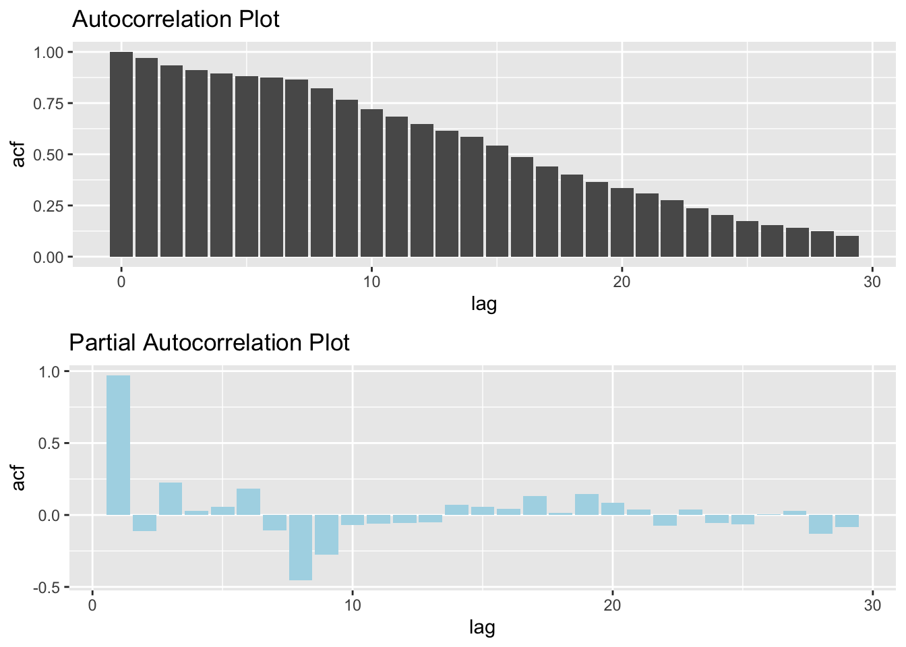

We performed a detailed auto-regression analysis for the New York City. New York City had the highest covid cases and would make most of the cases in the New York city due to the very high population city. Below is a times series plot of the daily covid cases in New York.
ny_covid = read.csv('data/covid_testing.csv') %>%
janitor::clean_names()
######################################################
ny_covid$test_date = lubridate::mdy(ny_covid$test_date)
sub_df = ny_covid[ny_covid$county == 'New York City', ]
sub_df<- sub_df[seq(dim(sub_df)[1],1),]
# basic scatterplot
ggplot(sub_df, aes(x=test_date, y=new_positives)) +
geom_point(alpha = 10/100, colour = "red") +
scale_x_date(date_labels = "%m-%Y") +
theme(axis.text.x = element_text(angle = 60, hjust = 1)) +
labs(title = "New positives per month in NYC")The above plot is a scatter plot of the daily positive cases in New York City from March 2020 up-till now. We can see the wave like trend, especially from hill shaped curves at the start of the 2020, start of 2021, start of 2022 when it peaked around mid 2022. This implies the existence of auto regressive behavior which we were interested to investigate. To better understand the auto-regressive trend we built a Autocorrelation Function (ACF) plot and Partial Autocorrelation Function (PACF) plot. The ACF and PACF plots are used to figure out the order of AR, MA, and ARMA models. Autocorrelation is the correlation between a time series with a lagged version. The partial autocorrelation at lag k is the autocorrelation between X_t_t and X_(t-k) that is not accounted for by lags 1 through ùëò‚àí1.
library(forecast)
library(ggplot2)
conf.level <- 0.95
ciline <- qnorm((1 - conf.level)/2)/sqrt(length(sub_df$new_positives))
############# ACF ####################
bacf <- acf(sub_df$new_positives, plot = FALSE)
bacfdf <- with(bacf, data.frame(lag, acf))
p1 <- ggplot(data=bacfdf, mapping=aes(x=lag, y=acf)) +
geom_bar(stat = "identity", position = "identity")
########### PACF ###################
bacf <- pacf(sub_df$new_positives, plot = FALSE)
bacfdf <- with(bacf, data.frame(lag, acf))
p2 <- ggplot(data=bacfdf, mapping=aes(x=lag, y=acf)) +
geom_bar(stat = "identity", position = "identity",fill="lightblue")
grid.arrange(p1,p2) Both the ACF and PACF start with a lag of 0, which is the correlation of the time series with itself and therefore results in a correlation of 1. However after a lag of 1, ACF gives us values of auto-correlation of any series with its lagged values whereas PACF finds correlation of the residuals that remains after removing the effects which are already explained by the earlier lag(s). Thus PACF might be a better indicator of how many lag terms to keep. In our case we decided to move with the 8 lag terms since they seem to have significant partial autcorrelation with value at lag = 0 (present value).
The coefficients for an AR(8) model represent the weights that are applied to the past 8 values of the time series (i.e. \(y_{t-1}\), \(y_{t-2}\), \(y_{t-3}\), \(y_{t-4}\), \(y_{t-5}\), \(y_{t-6}\), \(y_{t-7}\), \(y_{t-8}\)) in order to predict the next value of the time series (\(\hat{y}_t\)). In this case, the coefficients are as follows:
These coefficients can be used to write the ARIMA (8,0,0) equation as follows:
\(\hat{y}t = \alpha_1 y{t-1} + \alpha_2 y_{t-2} + \alpha_3 y_{t-3} + \alpha_4 y_{t-4} + \alpha_5 y_{t-5} + \alpha_6 y_{t-6} + \alpha_7 y_{t-7} + \alpha_8 y_{t-8} + \beta_0\)
\(\begin{aligned} \hat{y}t &= 1.0562 \cdot y_{t-1} - 0.2312 \cdot y_{t-2} + 0.0948 \cdot y_{t-3} + 0.0779 \cdot y_{t-4} - 0.1035 \cdot y_{t-5} + 0.1343 \cdot y_{t-6} + 0.3918 \cdot y_{t-7} - 0.4517 \cdot y_{t-8} + 2924.354 \end{aligned}\)
This equation can be used to predict the next value of the time series, \(\hat{y}_t\), based on the past 8 values of the time series. The coefficients in the equation represent the relative importance of each of the past values in predicting the next value.
reg1 = arima(sub_df$new_positives, order = c(8,0,0))
ar = fitted(reg1)
ggplot(sub_df, aes(x=test_date, y=new_positives)) +
geom_point(alpha = 20/100, color = "red") +
scale_x_date(date_labels = "%m-%Y",date_breaks = "1 month") +
theme(axis.text.x = element_text(angle = 60, hjust = 1)) +
labs(title = "Scatter Plot of Daily Postive Cases in New York City from 2020-2022
with ARIMA trend line", x= "Test Date",
y = 'Positive Cases Detected') +
geom_line(aes(y=ar,color = "ARIMA trend line")) +
scale_color_manual(values = c("ARIMA trend line" = "black"),
labels = "Fitted Arima Model")